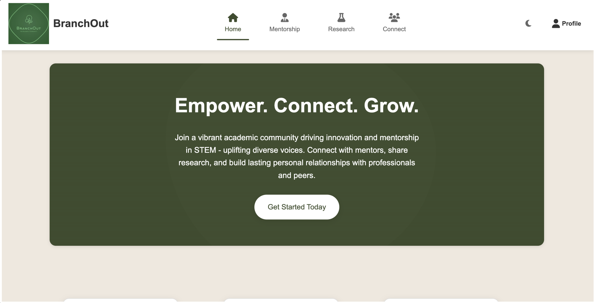
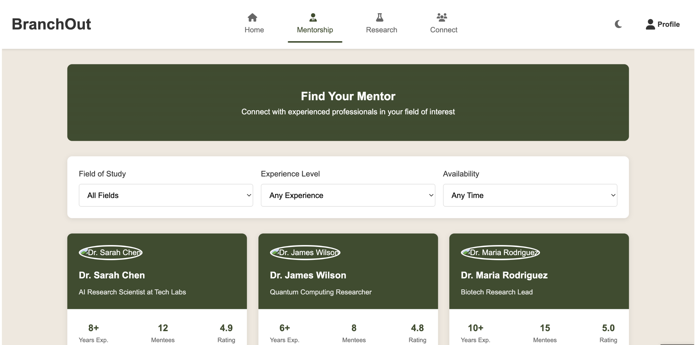
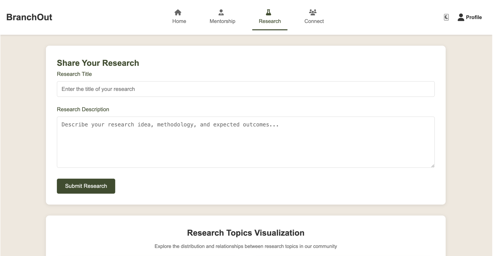
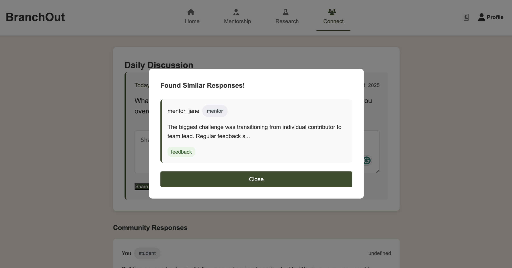
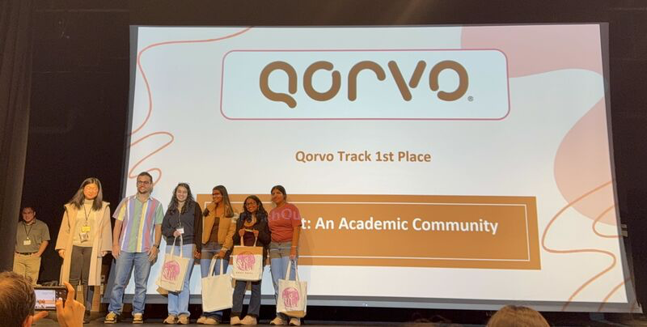

Pearl Hacks 2025 · Shipped · 1st Place, Qorvo
Four CS undergrads, one sleepless night, and a question we'd been sitting with for years: Why is networking still so hard for people who don't fit the default mold?
01 — The Problem
Throughout our time as CS majors trying to break into the industry, something kept coming up. The people who needed support the most were the ones least likely to find it. Traditional networking platforms are designed for people who already have a foot in the door. A polished LinkedIn profile, a warm intro, a professor who knows someone. What about everyone else?
A conversation with a professional in our network confirmed it. They'd felt the same gap, even years into their career. Representation and personal connection were still missing from the tools that were supposed to provide them.
BranchOut started from that frustration. We wanted to build something that didn't just connect people, but actually lowered the threshold between a student who needs guidance and a mentor who genuinely wants to give it.
02 — My Role
My main contribution was the back-end, specifically learning and integrating D3.js to build the dynamic, interactive data visualizations that updated in real time with user-inputted research data. I also developed the project's overarching visual theme and made sure the UI stayed consistent and engaging across all five pages. Back-end logic, D3 visualizations, and the design system that kept everything cohesive.
03 — How We Built It
We started with sketches. Actual pen-and-paper wireframes, which is a chaotic but deeply satisfying way to design under time pressure. From there we moved to digital wireframes mapping out the three core features: mentorship matching, research collaboration, and a daily community Q&A.
The stack came together in layers. HTML, CSS, and JavaScript on the front-end, Flask and Python on the back-end, SQLAlchemy for the database, and NLTK for text processing so the keyword-matching between researchers actually worked. D3.js handled the visualizations, which was its own adventure.
Mentorship Matching
A filter-based system letting students find mentors by background, industry, and availability. Built to surface the personal connection that generic platforms consistently miss.
Research Collaboration Portal
Researchers submit ideas and get matched to others with similar keywords using text processing. The goal was to replicate how good academic conversations actually start.
D3.js Network Visualizations
Interactive, data-driven visualizations that updated as users submitted research ideas. Built so you could watch the community's interests take shape in real time.
Daily Q&A Prompts
A lightweight engagement feature keeping the platform alive between formal mentorship sessions. Low stakes, high connection.
04 — What We Shipped
BranchOut launched as a fully functional Flask web application with five distinct pages: home, research collaboration, mentorship matching, community connection, and user profiles. The keyword-matching system connected researchers by shared interest. The mentorship filters worked. The D3 visualizations updated live. We demoed it to judges who had seen dozens of projects that day, and we won.


Home page · Mentorship matching with demographic filters


Research submission portal · Daily discussion with "found similar response" popup
05 — The Hard Parts
The first challenge was scope. Four people, one day, and a dozen possible directions. We had to make quick decisions about what to build and what to leave for the future, which is a skill that sounds easy until you're in hour six and everyone has a different opinion.
The bigger challenge was D3. None of us had used it before. Getting the visualizations to update dynamically with live user data required a lot of trial, a very patient mentor, and eventually a breakthrough that made the whole thing click. That's the one I'm most proud of. Not because it worked, but because of how much we learned making it work.
The problem we set out to solve in the first five minutes was still the one we were solving in the last five minutes.
06 — The Win

Accepting 1st place at Pearl Hacks 2025, sponsored by Qorvo
07 — What's Next
The dummy data was always meant to be a placeholder. The plan for BranchOut is to scale toward real-time data, richer demographic filters for mentorship matching, and a visualization layer closer to what LitMaps does for academic literature, showing users where their research sits in a living, breathing map of community interest.
Impact